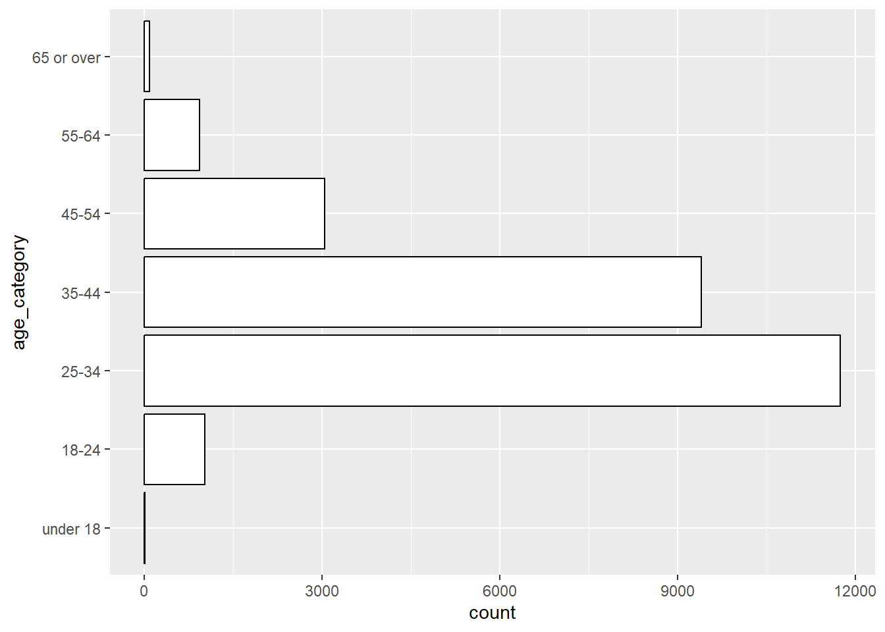
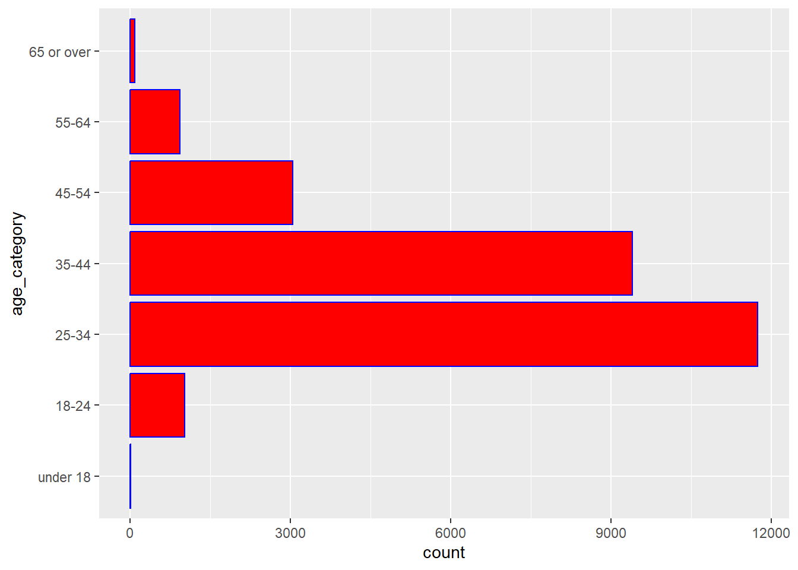
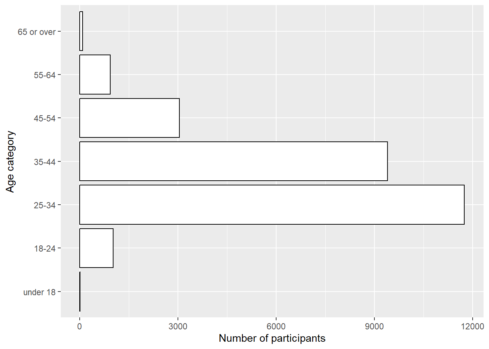
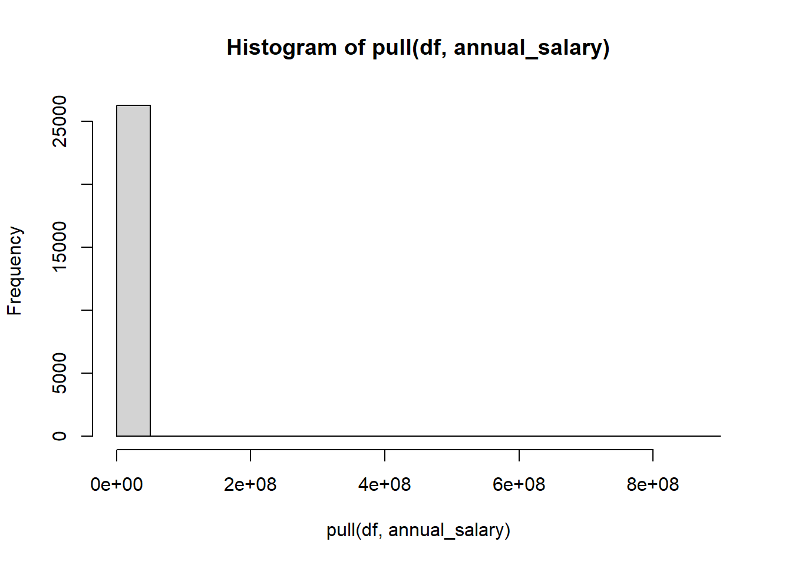
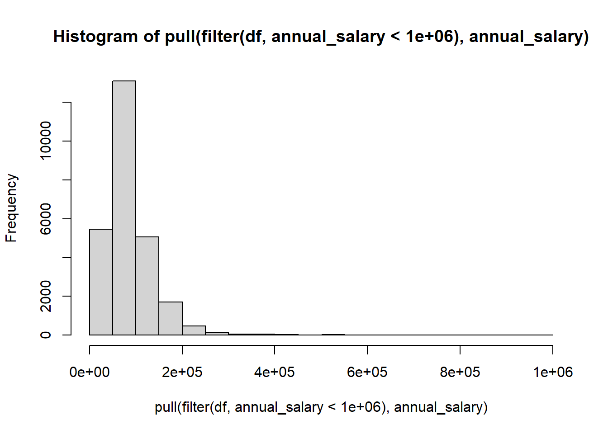
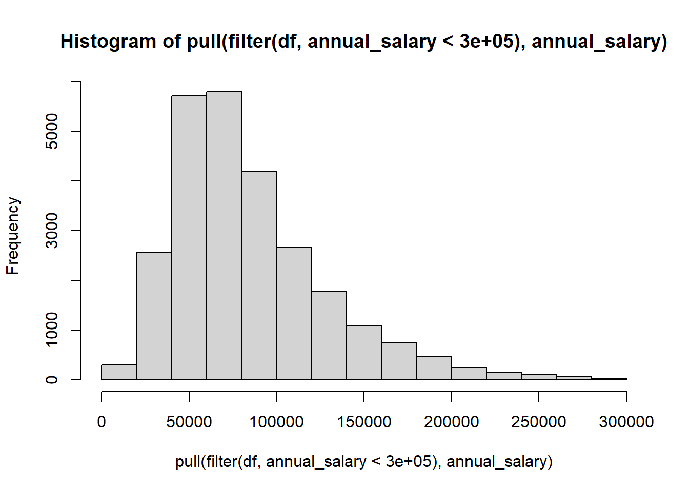
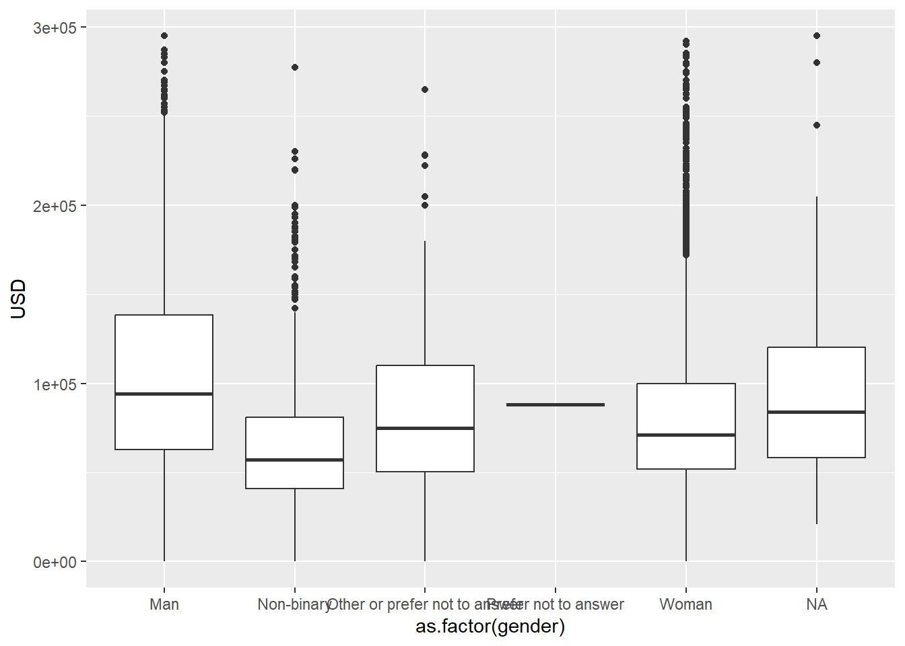

rm(list = ls())10 EDA on salary survey in different countries
NSC-R Tidy Tuesday January 2023
10.1 Introduction
In this tutorial we will do some descriptive analysis on a salary survey in different countries and some background variables of the participants (Yasrebi-de Kom, 2023).
Thank you to Wim Bernasco who provided detailed feedback on the script and supervision on preparing this session.
10.2 Getting started
But let us first make our working environment clean and remove the environment.
We need two packages here. Install the needed libraries if necessary.
# Install needed libraries
#install.packages("tidyverse")
#install.packages("priceR")Then we have to open the needed packages. We need tidyverse for data wrangling functions (e.g. readr) and we need priceR for handling price and currency data necessary for this dataset and the questions you have to answer.
library(tidyverse)
library(priceR) Now you can load the salary survey data.
survey <- read_csv('https://raw.githubusercontent.com/rfordatascience/tidytuesday/master/data/2021/2021-05-18/survey.csv')10.3 Analyses
10.3.1 Question 1: What kind of variables are in the dataset?
Note
‘|>’ is equal to ‘%>%’, the latter is included in tidyverse
Let us look first at the names of the variables.
survey |> names() [1] "timestamp"
[2] "how_old_are_you"
[3] "industry"
[4] "job_title"
[5] "additional_context_on_job_title"
[6] "annual_salary"
[7] "other_monetary_comp"
[8] "currency"
[9] "currency_other"
[10] "additional_context_on_income"
[11] "country"
[12] "state"
[13] "city"
[14] "overall_years_of_professional_experience"
[15] "years_of_experience_in_field"
[16] "highest_level_of_education_completed"
[17] "gender"
[18] "race" And now some information on the variables. What do you see.
survey |> dplyr::glimpse()Rows: 26,232
Columns: 18
$ timestamp <chr> "4/27/2021 11:02:10", "4/27/2~
$ how_old_are_you <chr> "25-34", "25-34", "25-34", "2~
$ industry <chr> "Education (Higher Education)~
$ job_title <chr> "Research and Instruction Lib~
$ additional_context_on_job_title <chr> NA, NA, NA, NA, NA, NA, NA, "~
$ annual_salary <dbl> 55000, 54600, 34000, 62000, 6~
$ other_monetary_comp <dbl> 0, 4000, NA, 3000, 7000, NA, ~
$ currency <chr> "USD", "GBP", "USD", "USD", "~
$ currency_other <chr> NA, NA, NA, NA, NA, NA, NA, N~
$ additional_context_on_income <chr> NA, NA, NA, NA, NA, NA, NA, N~
$ country <chr> "United States", "United King~
$ state <chr> "Massachusetts", NA, "Tenness~
$ city <chr> "Boston", "Cambridge", "Chatt~
$ overall_years_of_professional_experience <chr> "5-7 years", "8 - 10 years", ~
$ years_of_experience_in_field <chr> "5-7 years", "5-7 years", "2 ~
$ highest_level_of_education_completed <chr> "Master's degree", "College d~
$ gender <chr> "Woman", "Non-binary", "Woman~
$ race <chr> "White", "White", "White", "W~We have 26,232 rows and 19 columns. All variables, except the variables ‘annual_salary’ and ‘other_monetary_comp’, are text (‘strings’ in SPSS speak).
10.3.2 Question 2: How many people participated in the survey?**
You can count the number of rows.
survey |> nrow()[1] 26232Using glimpse already indicated that there are 26.232, since one row often means one participant.
10.3.3 Question 3: what was the distribution of the ages of the people that participated in the survey?
Let us first count the age groups using variable ‘how_old_are_you’.
survey |> count(how_old_are_you)# A tibble: 7 x 2
how_old_are_you n
<chr> <int>
1 18-24 1015
2 25-34 11748
3 35-44 9398
4 45-54 3042
5 55-64 931
6 65 or over 88
7 under 18 10By using sort=TRUE you sort the groups from biggest to smallest group.
survey |> count(how_old_are_you, sort = TRUE) # A tibble: 7 x 2
how_old_are_you n
<chr> <int>
1 25-34 11748
2 35-44 9398
3 45-54 3042
4 18-24 1015
5 55-64 931
6 65 or over 88
7 under 18 10Now it is ordered on number. How can you order it on age group, how can we fix this? Order the categories in this variable. For this you have to construct a factor version of ‘how_old_are_you’
survey <-
survey |>
mutate(age_category = factor(how_old_are_you)) Then,show that they are different types (character vs. factor), but contain the same information
survey |>
select(how_old_are_you, age_category) |>
head() # A tibble: 6 x 2
how_old_are_you age_category
<chr> <fct>
1 25-34 25-34
2 25-34 25-34
3 25-34 25-34
4 25-34 25-34
5 25-34 25-34
6 25-34 25-34 Reorder the factor variable now in a generic way (without a function call)
survey <-
survey |>
mutate(age_category = relevel(age_category,
"under 18",
"18-24",
"25-34",
"35-44",
"45-54",
"55-64",
"65 or over"))The same result, but easier is the following:
survey <-
survey |>
mutate(age_category = relevel(age_category,
"under 18",
"18-24"))Now check if it looks as desired.
survey|>
count(age_category)# A tibble: 7 x 2
age_category n
<fct> <int>
1 under 18 10
2 18-24 1015
3 25-34 11748
4 35-44 9398
5 45-54 3042
6 55-64 931
7 65 or over 88Save this in a variable and l us research the age groups
#| warning: false
#| echo: true
age <- survey |> # save it in a variable
count(age_category)Put it in a table directly.
| age-category | number |
|---|---|
| < 18 | 10 |
| 18-24 | 1015 |
| 25-34 | 11748 |
| 35-44 | 9398 |
| 45-54 | 3042 |
| 55-64 | 931 |
| > 64 | 88 |
| ————– | ——– |
| Total | 26232 |
You can also write it to Excel if this is easier for you. The info in quotation marks has to be changed to a folder that fits your set-up. Illustrate in Excel: data -> text to columns.
write_csv(age,"C:/Users/FY125/Desktop/temp/Own tidy tuesday/age.csv") Maybe this one works for you.
write_delim(age,"C:/Users/FY125/Desktop/temp/Own tidy tuesday/age_delim.csv", delim = ";") Then you automatically get a nice csv. It depends on windows installation which of the two options work
Use knitr::kable(), kableExtra, DataTable::DT(),gt, apaTable or papaja packages for example to write tables for articles directly!
Important
So far so good - any questions?
10.3.4 Plotting
Plotting would also be a good idea also for showing distributions.
survey |>
ggplot() +
geom_bar(aes(y = age_category), # age_category variable on the y axis
color="black", fill = "white")
You also can do it with the blue colorline filled with redcolor.
survey |>
ggplot() +
geom_bar(aes(y = age_category), # age_category variable on the y axis
color="blue", fill = "red")
But, let us go back to first table and add title and change axis-titles now.
survey |>
ggplot() +
geom_bar(aes(y = age_category), # age_category variable on the y axis
color="black", fill = "white") +
labs(x ="Number of participants", y = "Age category", fill = "Age category")
10.3.5 Question 4: make a dataframe with the variables age, gender, annual salary, currency, other_monetary_comp
We call the new dataframe dt and use the function select of the tidyverse package.
df <- survey |> dplyr::select(age_category, gender, annual_salary, currency, other_monetary_comp)Look in your environment if you see the new dataframe df with the five variables.
Question 5: What is the distribution of gender in percentages
Use the df data, count gender, make a new variable percent.
df |>
count(gender) |>
mutate(percent = n/sum(n)*100) |>
dplyr::select(-n) # not yet rounded# A tibble: 6 x 2
gender percent
<chr> <dbl>
1 Man 18.1
2 Non-binary 2.72
3 Other or prefer not to answer 1.02
4 Prefer not to answer 0.00381
5 Woman 77.6
6 <NA> 0.564 n is not-rounded. Show the percentage now rounded (digits=3)
df |>
count(gender) |>
mutate(percent = round((n/sum(n)*100), digits = 3)) |>
dplyr::select(-n) # A tibble: 6 x 2
gender percent
<chr> <dbl>
1 Man 18.1
2 Non-binary 2.72
3 Other or prefer not to answer 1.02
4 Prefer not to answer 0.004
5 Woman 77.6
6 <NA> 0.564Of course, there are always better ways.
df |>
count(gender) |>
mutate(percent = (n/sum(n))*100,
percent = round(percent,3)) # A tibble: 6 x 3
gender n percent
<chr> <int> <dbl>
1 Man 4743 18.1
2 Non-binary 713 2.72
3 Other or prefer not to answer 268 1.02
4 Prefer not to answer 1 0.004
5 Woman 20359 77.6
6 <NA> 148 0.564Remember how we wrote this kind of table to Excel: try at home!
10.3.6 Question 6: Get the min, max, mean, sd, median, IQR and amount of missings for the variable annual salary
Try first with one or two variables, to make it easy for yourself, for example the meanand the median
df|>
summarise(mean = mean(annual_salary),
median = median(annual_salary)) # A tibble: 1 x 2
mean median
<dbl> <dbl>
1 145725. 76000A different way that can be useful for multiple variables is this one.
pv <- df |> dplyr::select(annual_salary) |>
pivot_longer(cols = annual_salary, names_to = "variable_name", values_to = "value")descriptive_stat <- pv |>
group_by(variable_name) |>
summarise(min = min(value, na.rm = TRUE),
max = max(value, na.rm = TRUE),
mean = mean(value, na.rm = TRUE),
sd = sd(value, na.rm = TRUE),
median = median(value, na.rm = TRUE),
iqr = IQR(value, na.rm = TRUE),
miss = sum(is.na(value)))
descriptive_stat# A tibble: 1 x 8
variable_name min max mean sd median iqr miss
<chr> <dbl> <dbl> <dbl> <dbl> <dbl> <dbl> <int>
1 annual_salary 0 870000000 145725. 5543526. 76000 56000 0Why do it like this? Because then you can use it for multiple variables. Now we can:
pv_2 <- df |> dplyr::select(annual_salary, other_monetary_comp) |>
pivot_longer(cols = c(annual_salary, other_monetary_comp), names_to = "variable_name", values_to = "value")descriptive_stat_2 <- pv_2 |>
group_by(variable_name) |>
summarise(min = min(value, na.rm = TRUE),
max = max(value, na.rm = TRUE),
mean = mean(value, na.rm = TRUE),
sd = sd(value, na.rm = TRUE),
median = median(value, na.rm = TRUE),
iqr = IQR(value, na.rm = TRUE),
miss = sum(is.na(value)))
descriptive_stat_2# A tibble: 2 x 8
variable_name min max mean sd median iqr miss
<chr> <dbl> <dbl> <dbl> <dbl> <dbl> <dbl> <int>
1 annual_salary 0 870000000 145725. 5543526. 76000 56000 0
2 other_monetary_comp 0 120000000 18489. 861667. 2000 10000 6785100 variables or even more variables at once: no problem! Try to write it to a csv!
10.3.7 Question 7: Plot the distribution of annual salary
We work out four ways. The first one is simple, but not very informative way. The second one doesn’t work because it is a tibble not a vector. We show only the code of this one. In number three and four we filter to remove outliers above two different numbers.
df |> pull(annual_salary) |> hist() # simple, but not yet very informative
#df |> dplyr::select(annual_salary) |> hist() # select would not work because it is a tibble not a vector
df |> filter(annual_salary < 1000000) |> pull(annual_salary) |> hist() # filter to remove outliers above 1000000
df |> filter(annual_salary < 300000) |> pull(annual_salary) |> hist() 


If you prefer using ggplot you can do it like this.
# not working for me
#| label: fig-ggplot
#| fig-cap: "Plotting distributions annual salary using ggplot"
df |>
filter(annual_salary < 300000)
ggplot() +
geom_histogram(aes(x = annual_salary), color = "black", fill="white", binwidth=5000)10.3.8 Question 8: Can we get a salary independent of currency?
In this case we take out the participants with only USD and CAD currency and converted their ’annual-salary’to USD.
converted<- df |> filter(currency == "USD" | currency == "CAD") |>
mutate(
USD = convert_currencies(
price_start = annual_salary,
from = currency,
to = "USD",
date = as.Date("2019-12-14"))
)Or convert all the data.
converted_all<- df |> filter(!currency %in% c("AUD/NZD", "Other")) |>
mutate(
USD = convert_currencies(
price_start = annual_salary,
from = currency,
to = "USD",
date = lubridate::today())
)10.3.9 Question 9: Compare salary across genders?
We use the converted-all dataset, look for data lower than USD-300000 and show the mean
converted_all |> group_by(gender) |> filter(USD < 300000) |>
summarise(mean = mean(USD)) # A tibble: 6 x 2
gender mean
<chr> <dbl>
1 Man 104512.
2 Non-binary 67624.
3 Other or prefer not to answer 85149.
4 Prefer not to answer 88000
5 Woman 80476.
6 <NA> 93716.We plot this, and now we place it in the margin.
converted_all |> filter(USD < 300000) |> group_by(gender) |>
ggplot(aes(x = as.factor(gender), y = USD)) +
geom_boxplot()
10.4 References
Yasrebi-de Kom, F. (2023, January). NSC-R Workshops: NSC-R Tidy Tuesday. NSCR. Retrieved from https://nscrweb.netlify.app/posts/2023-01-24-nsc-r-tidy-tuesday/